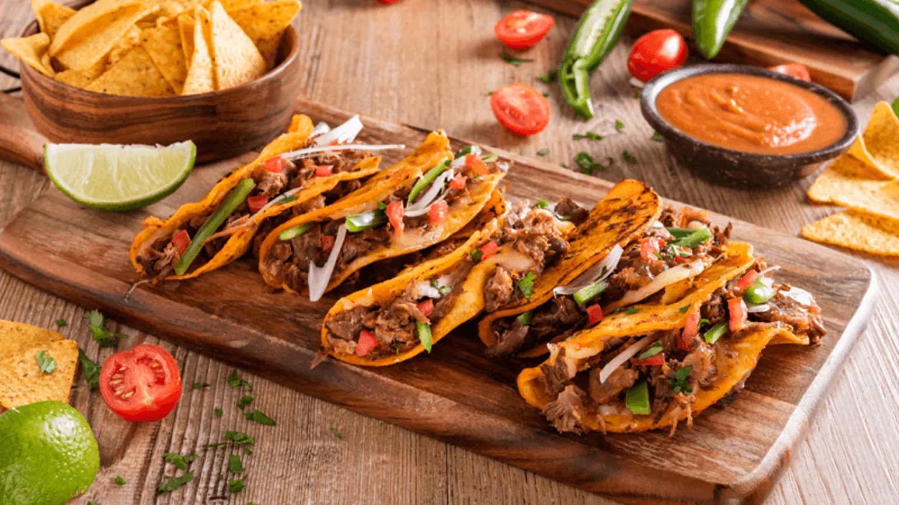
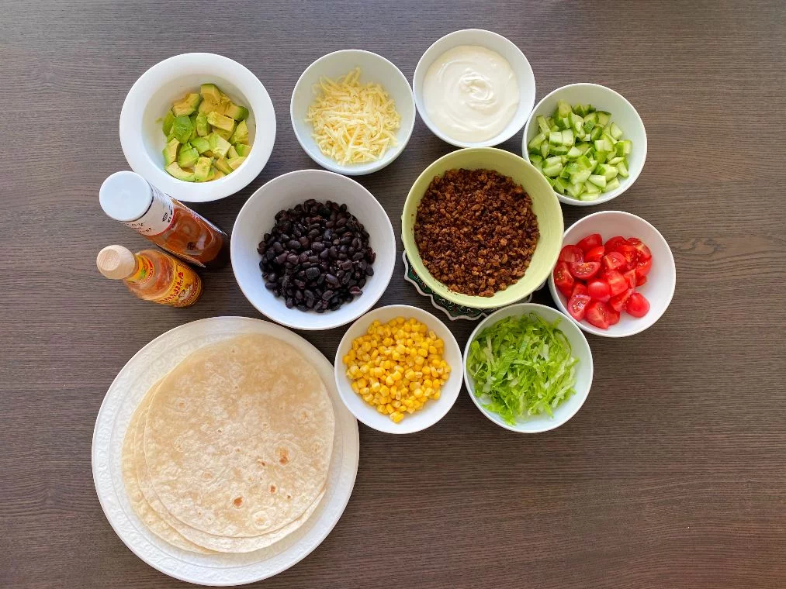
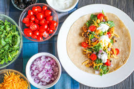
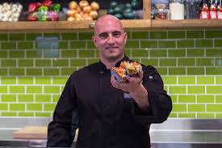

Välkommen till Taco Time Foodtruck
Testa våra autentiska tacos direkt från Mexiko



Vår passionerade kock, Miguel, är hjärtat och själen i vår tacos foodtruck. Med år av erfarenhet och en kärlek till autentiska mexikanska smaker skapar han varje rätt med precision och kreativitet. Miguel strävar alltid efter att erbjuda våra kunder en smakupplevelse utöver det vanliga, och hans dedikation till att använda färska, högkvalitativa ingredienser är oslagbar. Hans expertis och passion för matlagning genomsyrar varje tugga av våra tacos, och hans vänliga leende och öppna hjärta gör varje besök till vår foodtruck till en minnesvärd upplevelse.
